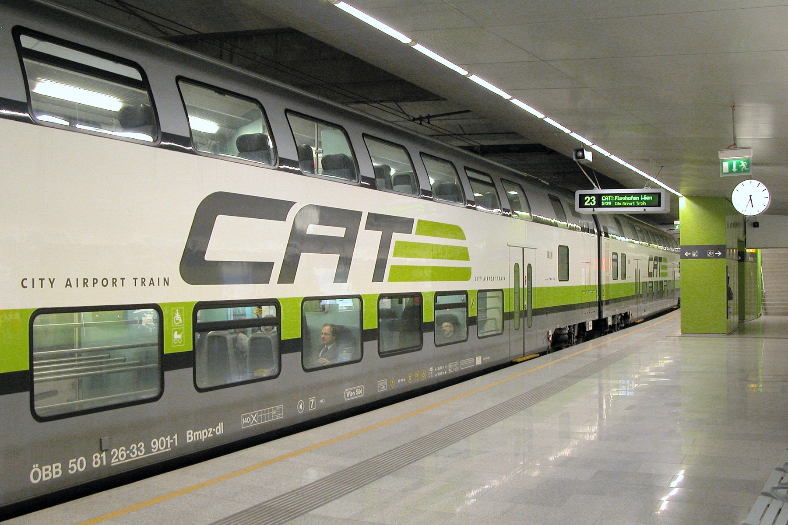
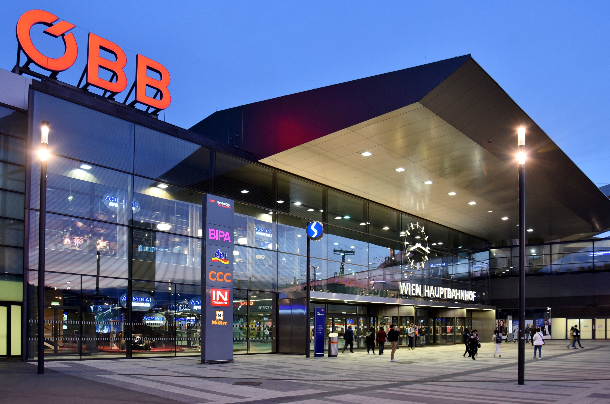
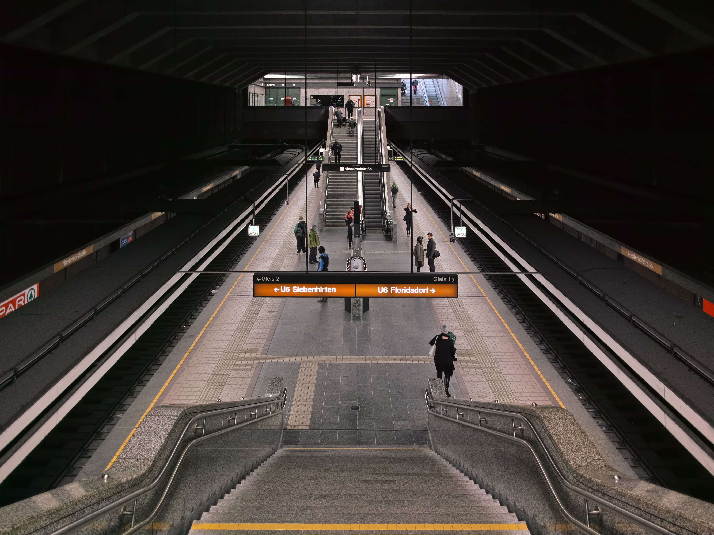
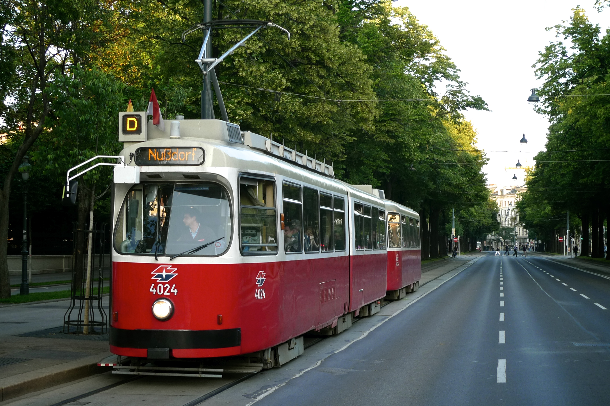
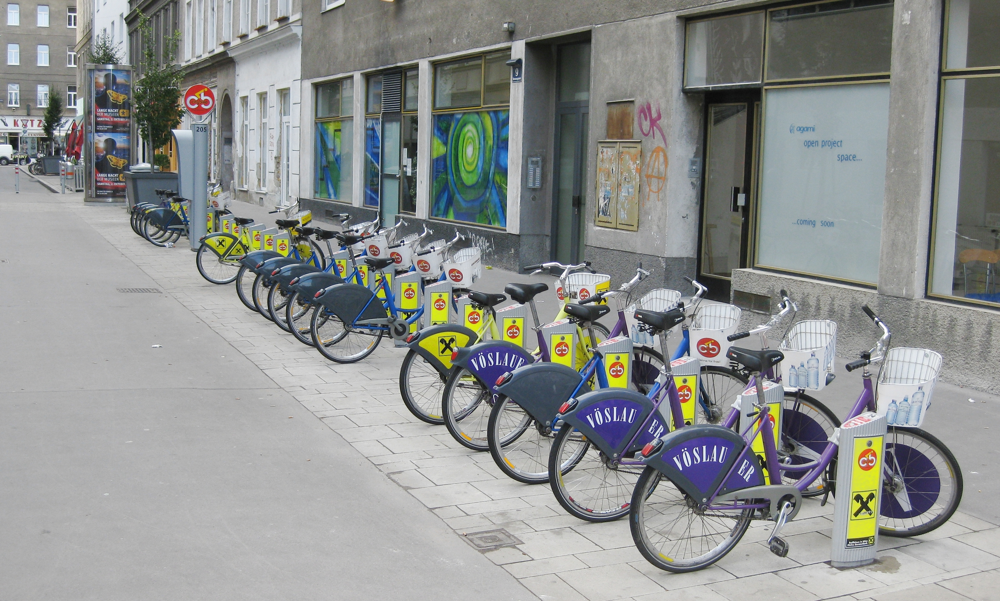

Public Transport
Vienna boasts an extensive and efficient public transport system, including buses, trams, and the U-Bahn
(subway). The network is well-connected, making it easy to navigate the city. Tickets can be purchased at
stations, online, or via mobile apps. Consider getting a day pass or a weekly pass for unlimited travel
within the city.
Getting from the Airport to the city centre

Vienna Airport is connected via rail to the city centre. The City Airport Train (CAT) offers a direct
connection to the city center in about 16 minutes. Alternatively, you can use the S-Bahn (suburban train),
which is cheaper than the CAT but takes a longer time, or take a bus or taxi for convenience.
Here are some options for getting from Vienna Airport to the city centre:
- City Airport Train (CAT): Cost: Approx. €29.80. Departs every 30 minutes from the
airport to Wien Mitte station in the city center. Tickets can be purchased online or at the station.
- S-Bahn (S7): Cost: Approx €3.90. The S7 line connects the airport to various parts of
Vienna, including Wien Mitte and Praterstern stations. It is a more economical option compared to the
CAT.
- Taxi: Cost: Approx. €45. Taxis are available outside the airport terminal. The ride to
the city center takes approximately 20-30 minutes, depending on traffic.
- Bus: Cost: Approx. €21. Several bus lines connect the airport to different parts of
Vienna. Check the local bus schedules for routes and timings.
Getting Around from Vienna Central Station (Wien Hauptbahnhof)

Vienna Central Station is a major transportation hub with connections to various parts of the city and
beyond. From here, you can access the U-Bahn, trams, and buses to reach your destination.
The U-Bahn

The U-Bahn is Vienna's subway system, consisting of five lines (U1, U2, U3, U4, and U6) that cover the city
extensively. Trains run frequently, and the system is known for its punctuality and cleanliness. Key
stations include Stephansplatz (U1 and U3), Karlsplatz (U1, U2, and U4), and Schwedenplatz (U1 and U4).
The S-Bahn
The S-Bahn (suburban train) complements the U-Bahn network, providing connections to suburban areas and
nearby towns. The S-Bahn lines are integrated with the U-Bahn, allowing for easy transfers. Key S-Bahn
stations include Wien Mitte, Praterstern, and Meidling.
Trams and Buses

Vienna's tram network is one of the largest in the world, with numerous lines that traverse the city. Trams
are a scenic way to explore Vienna, offering views of the city's architecture and landmarks. Buses
complement the tram and U-Bahn networks, providing access to areas not covered by other modes of transport.
Cycling in Vienna

Vienna is a bike-friendly city with numerous cycling paths and bike rental options. You can rent bikes from
various rental shops or use the city’s bike-sharing program, WienMobil
Rad, which offers free rides for the first hour. Cycling is a great way to explore the city at your
own pace while enjoying the scenic views.